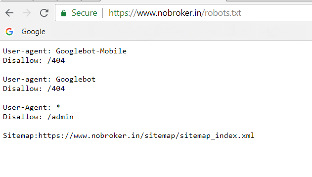

In order to prepare our “Mumbai price estimator” model we need information such as price, location, size and other relevant data of the houses located in Mumbai.
We scrap data from a real estate website NoBroker.in using the rvest package. We collect the sample information from the website and generalize our estimation based on these samples.
Before we begin scraping we should check if the website allows data scraping? The robots.txt file (screenshot below) disallow bots to scrap scrap admin page, other than these there are no restrictions.

Apart from the robot file, we will adhere to the following principles.
For a new request, our bot will wait between one to five minutes, this ensures that there is no major impair on the website server; also saves our IP address ban.
We will scrape data which is available on public domain. Thus we will not scrape any personal information such as Name, phone number or any other sensitive/protected records.
We pledge to not be involved in any commercial activity with the data extracted from website. The data will only be used for educational/publishing purpose.
Now, that we have laid our principles, lets proceed to scraping.
First we set the base URL, nobroker provides services throughout India. Our project focuses on Mumbai location, the following is the base URL for Mumbai.
baseurl <- "https://www.nobroker.in/property/sale/mumbai/Mumbai/?nbPlace=ChIJwe1EZjDG5zsRaYxkjY_tpF0&price=0,100000000000000&lat_lng=19.1232561569964,72.8771623837987&latitude=19.1232561569964&longitude=72.8771623837987&orderBy=nbRank,desc&radius=2&propertyType=sale&pageNo="The base URL has 10 property details on each page and each property has a unique id associated with it.
We write a small function to extract the unique ids. We then use map function from the purrr package to loop through the website and extract unique id’s into a dataframe.
library(rvest); library(tidyverse)
NB_get_ID_dump <- function(url) {
getNBID <- read_html(url) %>%
html_nodes(".card") %>%
html_attr("id") %>%
as.tibble() %>%
separate(value, c("delete", "id"), sep = "-") %>%
select(id)
}
#1:2 indicates 2 pages - i.e. 2 x 10 = 20 entries
all_ids <- paste0(baseurl, 1:2) %>% map_df(NB_get_ID_dump)An extracted id looks like this “ff80818162538115016253836a850049”. We will use these ids to extract relevant property information.
Now that we have a list of property ids, we proceed to extract relevant property information. We write a function to extract data from each id and store results in a tibble.
The function NB_ind_dump in below code helps us to extract property details such as Latitude, Longitude, Area, Price, etc about a listed property.
NB_ind_dump <- function(propid) {
ind_doc <- read_html(paste0("https://www.nobroker.in/property/buy/", propid ,"/detail"))
#Posted Time
table_time <- ind_doc %>% html_text() %>%
str_extract_all("timeago.*") %>%
str_extract_all("'.*PM") %>%
as.data.frame() %>%
as.tibble() %>%
set_names("PostedTime") %>%
separate(PostedTime, c("del", "PostedTime"), sep = "'") %>%
select("PostedTime")
#Lat and Long
table_lat_long <- ind_doc %>%
html_nodes("#map-canvas") %>%
str_extract_all("data-l.*") %>%
str_extract_all("\\d{2}\\.\\d*") %>%
as.data.frame() %>% t() %>% as.tibble() %>%
set_names("Lat", "Long")
#Other Details
table_all_details <- ind_doc %>%
html_nodes("#fixedHeaderOnScroll .detail-title ,
#price,
.detail-title-main,
.text-align-left .detail-title#fixedHeaderOnScroll .detail-title ,
.detail-title-main,
.text-align-left .detail-title,
h5") %>%
html_text() %>% str_trim() %>%
as.tibble() %>%
slice(6:51) %>% t() %>% as.tibble()
final_table <- reduce(c(table_time, table_lat_long, table_all_details), cbind) %>% as.tibble()
#Wait randomly between 1 to 5 minutes
runif(1, min = 60, max = 300) %>% Sys.sleep()
return(final_table)
}We again use the map_df function to extract information of listed property into a dataframe.
NB_dump <- all_ids %>% pull(id) %>% map_df(NB_ind_dump) The extracted NB_dump now has 49 features about property listed on the website. We remove some duplicate and invalid features to get our final result.
cleaned_table <- NB_dump %>%
select(-14, -16, -17, -18, -21, -22, -26, -28, -30, -32, -34, -36, -38, -40, -42, -43, -44, -46, -48) %>%
set_names("PostedTime", "Lat", "Long", "SaleType", "HouseType", "Address", "Verified", "LoanVerified", "Price", "Negotiable", "Area", "Measure", "MonthlyEMI", "Bedrooms", "Bathrooms", "FloorType", "Balconies", "ShortAddress", "Bldgtype", "Age", "OwnedBy", "Maintanance", "FloorType2", "Area2", "Furnished", "Facing", "FloorOn", "Parking", "PowerBackup", "WaterSupply")Here is a glimpse of our final result.
## -- Attaching packages ------------------------------------------------ tidyverse 1.2.1 --## v ggplot2 3.0.0 v purrr 0.2.5
## v tibble 1.4.2 v dplyr 0.7.6
## v tidyr 0.8.1 v stringr 1.3.1
## v readr 1.1.1 v forcats 0.3.0## -- Conflicts --------------------------------------------------- tidyverse_conflicts() --
## x dplyr::filter() masks stats::filter()
## x dplyr::lag() masks stats::lag()cleaned_table %>%
head() %>%
select(2:6) %>%
DT::datatable(rownames = FALSE)Nobroker.in - World’s Largest NoBrokrage Property Site.
Web scraping through rvest vignette.